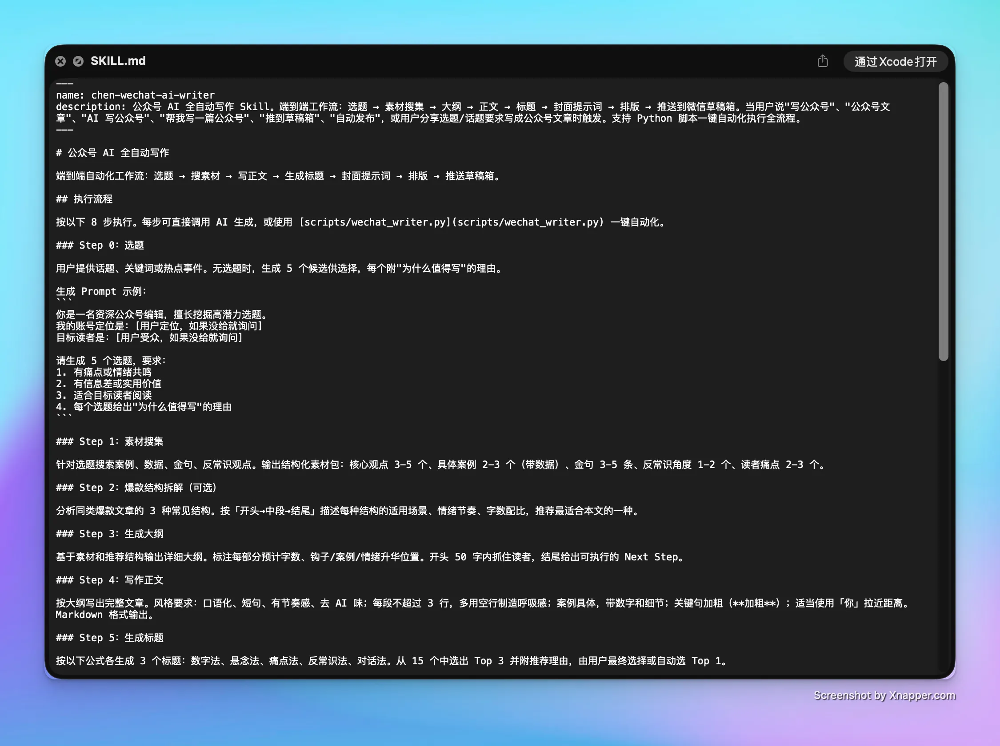

公众号写作最大的瓶颈不是"写不出来"，而是每次都从零开始。我把它拆成了三层可复用架构——Prompt 定义判断、工作流编排步骤、代码模板处理格式，人只做选题和最终审核，单篇从 2 小时压到 3 分钟。
传统公众号写作平均 2 小时以上。这套 Skill 把全流程压缩到 3 分钟，人只做选题和审核。
五步闭环，每步有固定输入、固定输出。Skill 管流程，人只做选题和审核。

用户提供话题或关键词。无选题时 AI 自动生成 5 个候选，每个附选题理由。
AI 自动搜索并整理观点、案例、金句、反常识角度、读者痛点，结构化输出素材库。
基于大纲完成全文。内置去 AI 味规则：口语化短句、关键句加粗、案例带数字，1500-2000 字。
5 种标题公式各生成 3 个候选，选 Top 1。同步生成封面提示词，可直接投入 Midjourney / GPT-4o。
Markdown 转公众号 HTML，自动推送至草稿箱。人只需进后台点群发。
"这不是一个 prompt，这是一套可迭代、可复用、可迁移的内容生产架构。"